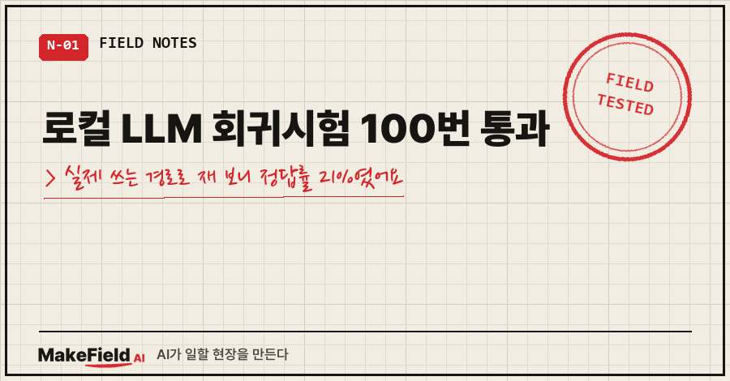
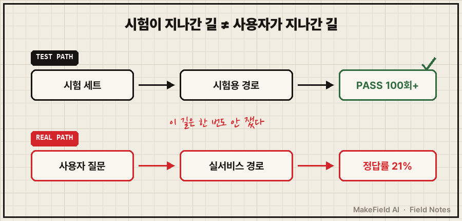
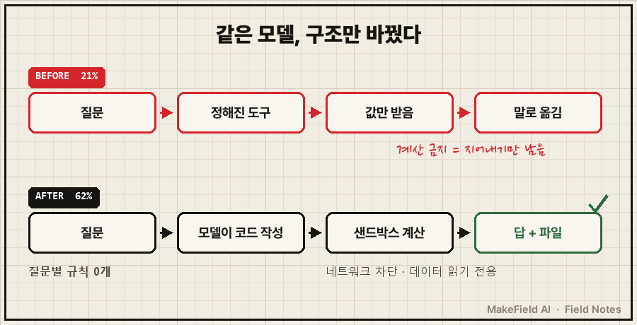
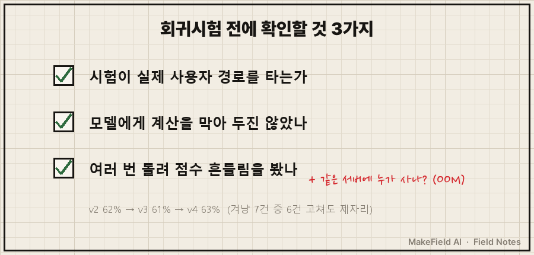

AI랑 몇 주 동안 회귀시험을 100번 넘게 돌렸어요.
파이프라인은 32번 고쳤고요.
그런데 사용자가 실제로 타는 경로를 그대로 복제해서 처음 재 보니, 정답률이 21%였습니다.
로컬 LLM 회귀시험이 아무리 잘 통과해도, 시험이 사용자가 실제로 쓰는 경로를 타지 않으면 그 점수는 실사용 품질과 상관이 없습니다. 제 경우엔 52문항 중 11개만 맞았고, 원인은 모델 성능이 아니라 모델한테 "원데이터 보지 마, 계산하지 마"라고 막아 둔 구조였어요.
저는 15년째 공장 설비 옆에서 제어 일을 하는 엔지니어예요.
요즘은 설비가 쌓아 두는 운전 데이터를 사람 말로 물어보면 AI가 답해 주는 도구를 만들고 있습니다. 코드는 AI가 짜고, 저는 "이게 진짜 맞냐"를 따지는 쪽이에요.
1. 뭘 만들고 있었나: 운전 데이터에 말로 묻는 봇
구성은 이래요.
- 업무용 GPU 서버 1대에 오픈 모델을 직접 올림(로컬 LLM)
- 설비 운전 데이터 수백만 행이 parquet 파일로 쌓여 있음
- 사용자가 웹 화면에서 물어봄 → 숫자·그래프·보고서 파일로 답
질문은 이런 식이에요.
"지난달 부하 50% 구간에서 몇 시간 돌았어?"
"월별 부하 그래프 그려 줘."
"온도가 제일 높았던 순간, 그때 다른 센서값은?"
AI 코딩 도우미(Claude) 세션들이 이걸 몇 주 동안 다듬었어요.
시험 세트 만들고, 돌리고, 틀린 거 고치고, 또 돌리고..
그렇게 회귀시험이 100회를 넘었고, 시험 세트는 매번 잘 통과했습니다.
근데 이상하게 실제로 써 보면 체감이 별로였어요.
2. 실제 경로를 복제해 재 보니 21%
그래서 방법을 바꿨어요. 시험용 길 말고, 웹 화면에서 사용자가 질문할 때 실제로 지나가는 경로를 통째로 복제해서 같은 질문을 넣어 본 거죠.
결과는 이랬습니다.
[실서비스 경로 복제 채점 — AI 잠정 판정]
데이터 질문 판정 가능 52건 중 PASS 11 (21%)
- 설비 혼동: 다른 설비 숫자를 자신 있게 답함 11건
- 계산 불가: 데이터를 받고도 "확인 불가" 10건
- 도구 호출 185회 중 실패 71회
- 요청한 파일(XLSX·PNG·DOCX) 생성: 0건더 아팠던 건 원인이었어요.
그동안 회귀시험 100회는 실제 경로가 아닌 곳을 재고 있었고, 실제 경로에는 핵심 결함이 있었습니다. 모델이 원데이터를 직접 못 보고, 미리 정해 둔 도구가 준 값만 받아 말로 옮기게 되어 있었거든요. 계산도 막혀 있었고요.
이 구조는 AI 세션들이 만들어 놓고 아무도 몰랐어요. 시험이 그 길을 안 지나갔으니까요.

3. "그게 무슨 AI냐, case by case 코딩이지"
여기서 제가 꽤 날 선 말을 했어요. 기록에 남은 그대로 옮기면 이렇습니다.
"입에 발린 말만 하고 쓸데없는 회귀시험만 반복하고 말만 거창하게 했다가 모르는 척 포커스 흐리고 뭐 어쩌라는 거야?"
AI도 인정했어요. 회귀 100회와 파이프 32판이 실제 경로가 아닌 곳을 쟀다고요.
그다음 AI가 내놓은 해법은 질문 유형별 규칙을 더 붙이는 쪽이었는데, 그것도 막았습니다.
"질문들까지 다 제공하면 그게 무슨 AI냐, case by case 코딩이지."
사용자 질문은 천차만별이에요. 질문마다 맞춤 규칙을 붙이면 시험 세트 점수는 오르겠지만, 처음 보는 질문엔 또 무너지거든요. 그래서 질문별 규칙 금지를 못 박았어요.
4. 바꾼 것: 모델한테 데이터를 보여 주고, 계산은 코드로
같은 모델을 그대로 두고 구조만 바꿨습니다.
- 코드 실행 샌드박스: 모델이 직접 파이썬 코드를 짜서 돌림. 네트워크는 끊고, 데이터는 읽기 전용
- 공용 로더 1개: 어떤 설비든 같은 방식으로 데이터를 읽는 함수
- 설비 목록 1개: 설비가 늘어도 항목 한 줄만 추가
- 신호 사전: 열 이름과 사람 말(한글 이름·단위)을 이어 주는 표
질문별 규칙은 하나도 안 넣었어요. 결과는 이렇게 나왔습니다.
[코드 실행 구조 1차 전체 채점 — AI 잠정 판정]
판정 가능 58문항 PASS 36 (62%) / 부분 7 / FAIL 15
설비 혼동 0건
요청 파일 생성: XLSX·PNG·DOCX·PPTX·CSV 생성 시작| 항목 | 실서비스 경로(기존 구조) | 코드 실행 구조 |
|---|---|---|
| 정답률 | 21% (11/52) | 62% (36/58) |
| 설비 혼동 | 11건 | 0건 |
| 요청 파일 생성 | 0건 | 생성됨 |
| 질문별 규칙 | — | 0개 |
LLM한테 "계산하지 마"를 걸면 남는 건 그럴듯하게 지어내는 것뿐이더라고요. 계산은 코드가 하고, 모델은 데이터를 보고 어떤 코드를 짤지 정하게 하니까 숫자가 원데이터와 맞기 시작했어요.

5. 해피엔딩은 아니었어요: 점수 제자리, 그리고 서버 과부하
여기서 끝났으면 깔끔했겠죠.
남은 실패를 잡으려고 로더를 v3, v4로 고쳤어요. 겨냥한 7건 중 6건은 실제로 고쳐졌습니다. 그런데 총점은 이랬어요.
v2 58문항 PASS 36 (62%)
v3 57문항 PASS 35 (61%)
v4 57문항 PASS 36 (63%)제자리예요. 고친 문항은 맞는데, 실행할 때마다 다른 문항이 뒤집혔거든요. 점수 한 번 오른 걸 보고 "고쳤다"고 하면 안 되는 이유를 숫자로 본 셈이에요.
그리고 사고도 하나 냈어요. 재시험 중에 모델이 짠 코드가 1,100만 행을 통째로 메모리에 올렸습니다.
메모리 114GB 사용, load 54
11:48:30 OOM → 시험 컨테이너 python(26GB) 강제 종료
같은 시각 같은 서버의 다른 웹 서비스: 접속 끊김 1건(BrokenPipe)저장된 데이터 손실은 없었지만, 같은 서버에 다른 서비스가 같이 살고 있다는 걸 시험 전에 확인 안 한 거죠. 그 뒤로 로더에 "필요 메모리가 6GB를 넘으면 멈추고 요약 함수를 쓰라고 안내"하는 보호 장치를 넣었어요. 같은 질문이 221초에서 85초로 줄었고, 답도 맞았습니다.

6. 자주 묻는 질문
Q. 로컬 LLM 회귀시험, 그럼 쓸모없나요?
아니요. 고친 걸 다시 깨뜨리지 않았는지 보는 데는 여전히 필요해요. 다만 시험이 사용자가 쓰는 경로와 같은 길을 타야 의미가 있어요. 저는 경로를 복제해 재기 전까지 몇 주 동안 엉뚱한 곳을 재고 있었어요.
Q. 업무 데이터 챗봇 정확도를 올리려면 프롬프트를 더 다듬어야 하나요?
제 경우엔 구조가 먼저였어요. 같은 모델로 프롬프트와 질문별 규칙을 덧대는 대신, 원데이터를 보고 코드로 계산하게 바꾸자 21%에서 62%로 올랐어요. 규칙을 덧대는 건 시험 세트 점수만 올리기 쉬워요.
Q. 코드 실행 샌드박스는 위험하지 않나요?
그래서 네트워크를 끊고 데이터는 읽기 전용으로 붙였어요. 도커는 네트워크 없는 컨테이너(--network none)와 읽기 전용 마운트를 공식 지원해요. 그래도 메모리는 따로 막아야 한다는 걸 저는 OOM을 내고서야 배웠어요.
시험이 통과했다는 말을 들으면, 이젠 점수보다 "그 시험이 어느 길로 갔는지"를 먼저 물어봐요. 여러분이 돌리는 AI 시험은 실제 사용자와 같은 길을 타고 있나요?
현장 데이터에 AI를 붙이다 깨지고 다시 짠 과정은 makefield.ai에도 차곡차곡 옮겨 두고 있어요.
참고
- Docker 공식 문서 — None network driver(
--network none) → https://docs.docker.com/engine/network/drivers/none/ - Docker 공식 문서 — Bind mounts(읽기 전용
readonly/ro) → https://docs.docker.com/engine/storage/bind-mounts/ - 실측: 2026년 11월 개인 작업 기록(채점 결과·질책 원문·OOM 기록, 회사·설비·서비스 이름과 설비 수치 제외). 정답률은 AI 1차 판정(교차 채점 전)
태그: #로컬LLM회귀시험 #로컬LLM #회귀시험 #LLM평가 #LLM테스트 #업무데이터챗봇 #데이터질의봇 #코드실행샌드박스 #LLM계산오류 #AI정답률 #오픈모델 #도커샌드박스 #OOM #AI오답노트 #MakeFieldAI